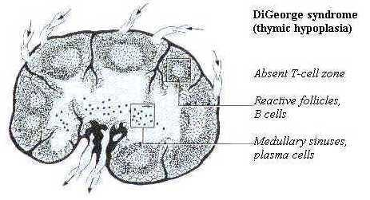
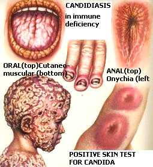
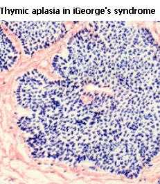

PRIMARY DISORDERS OF T-CELL FUNCTIONS
The general manifestations common for many T-cell defects include the following features:
- Chronic persistent or acute severe course of the infections provoked by opportunistic germs and by intracellular parasites (Mycobacteria, Fungi, Viruses and Protozoa).
- Decrease of delayed hypersensitivity reaction ability, revealed by skin test anergia.
- Graft versus host reactions in transfusion of donated blood and in organ/tissue transplantation.
- Diseases provoked by living attenuated vaccines (like BCG or anti-polio)
- Increase in oncological diseases incidence.
- Exhaustion, growth delay, chronic diarrhea, cachexy.
DIGEORGE'S SYNDROME (THYMIC APLASIA OR HYPOPLASIA). This is the classic example of selective T-cell deficiency that derived from failure of development of the third and fourth pharyngeal pouches. The latter give rise to the thymus, the parathyroids, some of the clear cells of the thyroid, and the ultimobranchial body. Portions of lips, ears and aortic arch also are embryonically related to these structures.
 Thus, these patients have total absence of cell-mediated immune responses
(owing to hypoplasia or lack of the thymus), hypocalcemia, hyperphosphatemia and tetany
(owing to lack of the parathyroids), and congenital defects of the heart and great vessels
(doubled aortic arch and heart dextroposition). In addition, the appearance of the mouth,
ears, and face may be abnormal, with multiple stigmata of dysembryogenesis (hypertelorism,
micrognatia, short filtrum and eminent forehead, low position of auricles). Sometimes
tracheo-oesophagal fistula can be revealed.
Thus, these patients have total absence of cell-mediated immune responses
(owing to hypoplasia or lack of the thymus), hypocalcemia, hyperphosphatemia and tetany
(owing to lack of the parathyroids), and congenital defects of the heart and great vessels
(doubled aortic arch and heart dextroposition). In addition, the appearance of the mouth,
ears, and face may be abnormal, with multiple stigmata of dysembryogenesis (hypertelorism,
micrognatia, short filtrum and eminent forehead, low position of auricles). Sometimes
tracheo-oesophagal fistula can be revealed.

Absence of cell-mediated immunity is manifested by low levels of circulating lymphocytes and a poor defense against fungal, protozoal and viral infections. Most common are atypical mycobacteriosis, tuberculosis, candidiasis, and coccidiosis, systemic herpetic and CMV infections, interstitial pneumomia caused by P. Carnii, and multifocal progressive leukoencephalitis caused by papovaviruses.

Sometimes the lymphocyte counts may be normal, in which case virtually all are B-cells. Plasma cells are present in normal numbers in lymphoid tissues, but the lymph nodes and the periarteriolar sheaths of the spleen are depleted.

Thymus is rudimentary, but immunoglobulin levels tend to be normal.Support for the idea that this syndrome is directly attributable to malformation of the thymus also comes from the successful treatment of some patients with this disease by transplantation of fetal thymus or thymus epithelium. The syndrome is genetically determined and related to chromosomal aberration – 22q-deletion.
NEZELOF’S SYNDROME (THYMUS DYSPLASIA). Patients with "partial" DiGeorge's syndrome, who have an extremely small but histologically normal thymus, without parathyroid, facial and cardiovascular anomalies have also been recorded. This condition is not very well defined, but is sometimes referred to as Nezelof's syndrome (thymic dysplasia).
T-cell function sometimes improves with age in these children, so that 5 years of age many have no T-cell deficit. Probably, this is a phenocopy of “full-scale” deletion syndrome, caused by some acquired disorder of early embryogenesis before 8th week of gestational age. Another hypothesis interprets Nezelof’s syndrome as a group of X-linked and autosomal recessive disorders of early T-cell differentiation.
The immunoglobulin levels are normal or compensatory increased, or there is selective deficiency of some isotypes.
PURINENUCLEOSIDE-PHOSPHORYLASE (PNP) DEFICIENCY. This hereditary disorder can be observed separately or as an element of thymic dysplasia. It is autosomal recessive and depends on mutation in 14th chromosome. The PNP is an important enzyme of purine metabolism, serving for conversion of deoxyguanosine and deoxyinosine into guanine and hypoxanthine. In PNP deficiency the substrates of this enzyme are cumulated and transfigured via bypass metabolic pathway into deoxy-GTP. This metabolite inactivates ribonucleotide-reductase, thus inhibiting DNA biosynthesis and producing the delay of cell replication. PNP is universally expressed enzyme, but the T-cells are most vulnerable in its deficit, because they constitutionally have minimal activity of another enzyme – 5’-nucleotidase, which may render some protection in PNP deficiency being able to decay the excess of deoxy-GTP.
The manifestations of PNP-deficiency include thymic hypoplasia, T-cell number decrease in blood, some elevation of NK-cell amount, opportunistic infections, hypouricemia, hemocytopenia of combined (aplastic and autoimmune) origin and also some neurological symptoms (hypotonus and spastic palsies).
CARTILAGE-HAIR DYSPLASIA and SHORT LEGGED DWARFISM are both autosomal recessive disorders with very similar manifestations. The patients have hair loss, more or less obvious growth delay with disproportionate short legs, abnormally loose joints and cystic sclerotic osteochondropathy. Immunologically the patients are very close to the pattern of DiGeorge’s syndrome. G1-phase of cell cycle is markedly elongated for B-cells and fibroblasts. The syndrome is found in Amish community in USA, where its rate is high due to inbreeding.
CANDIDIASIS is a chronic fungal infection with Candida albicans and similar yeasts and is also known as thrush. Candidas are universally spread, but an adult individual with normal immunity is absolutely resistant to them. Healthy neonates and pregnant women are more prone to thrush. The candidiasis is non-specific witness for the defects of T-cell immunity and/or for disorder of the complement system terminal links. Hence, it may be observed among T-cell and combined immunodeficiency patients very often. One of the candidiasis forms – chronic cutaneo-muscular candidiasis is a separate inherited disease, caused by autosomal-recessive mutation of T-lymphocytes, which loss the ability to produce one of the cytokines – MIF or migration inhibition factor. This kind of T-cell immunodeficit has limited manifestation and commonly is not accompanied by any substantial loss of antiviral and antibacterial immunity. At the same time, there may be various autoimmune endocrinopathies, pernicious anemia and iron-deficient states.
NEXT CHAPTER
OR